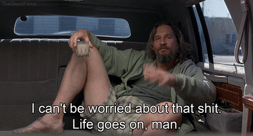
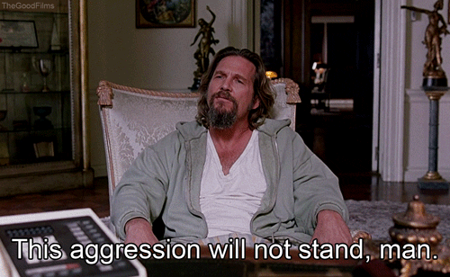

Vivre en peignoir et se la couler douce, c'est le credo des dudistes, les adorateurs du personnage principal du film des frères Coen The Big Lebowski. De la Thaïlande aux États-Unis, ils sont des dizaines de milliers à vouer un véritable culte au lifestyle décontracté du "Dude".15 ans après la sortie du film "the Big Lebowski", dans toute l'Amérique, une dizaine de fois par an, des centaines de fans du Dude convergent vers le "Lebowski Fest", où ils rejouent pieusement les scènes qui ont fait la légende du Dieu du cool. Après avoir vu le film pour la deuxième fois en 2005, Oliver Benjamin, le Dudely Lama a l'illumination. Il crée un forum sur le net pour répandre la bonne parole, et à sa grande surprise, les fans du monde entier se rassemblent autour de ce culte au n-ième degré. En 2013, avec plus de 170 000 dudistes enregistrés sur son site, le Dudely Lama n’a même plus le temps de se détendre sur son tapis. A Waterville, sur la côte Est des États-Unis, le cool, on connait. C'est dans cet état libertaire peuplé d’anciens hippies que Gary Silvia s'est installé après un parcours chaotique. Sa grand-mère rêve qu’il devienne prêtre. Pour la fuir, Gary s’engage dans l’armée pendant la Guerre du Golfe. 10 ans après son retour, il découvre le Dudisme sur Internet, Gary balance alors sa combinaison de mécanicien pour revêtir la sainte robe de chambre, et se consacre à sa passion : la gravure sur verre. Les verres gravés de Gary lui permettent de récolter des fonds afin de lancer la première Église Dudiste desÉtats-Unis. Pour se consacrer pleinement à l’étude des religions, il a fait une croix sur le travail. La messe, pour l'Église dudiste, c'est une partie de bowling. Gary et son ami Dave se retrouvent au moins une fois par semaine dans cette salle pour taquiner les quilles. Plusieurs fois par an, Dave y monte des événements autour du Big Lebowski. Histoire de contribuer à l'édification de l'Église Dudiste américaine, il y projette le film et y organise des tournois en invitant les meilleurs joueurs de l’état. La fièvre dudiste d'un cool pourtant très californien gagne même New York, la ville qui ne dort jamais ! En 2007, Roy et Nick sont à deux doigts de l'expulsion de leur boutique de comics quand l'un d'eux expose des T-shirts du Big Lebowski en vitrine. L’esprit du Dude fait un miracle et les ventes repartent en flèche.